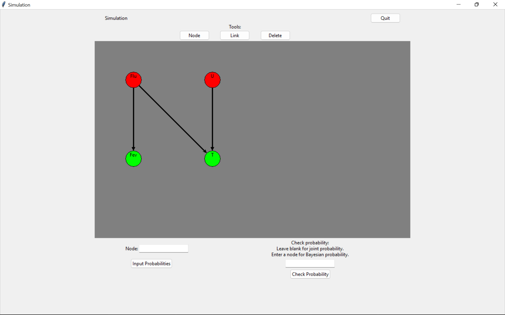
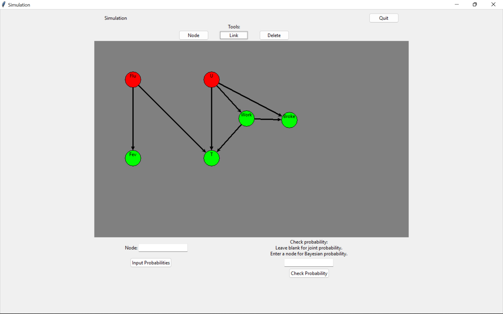
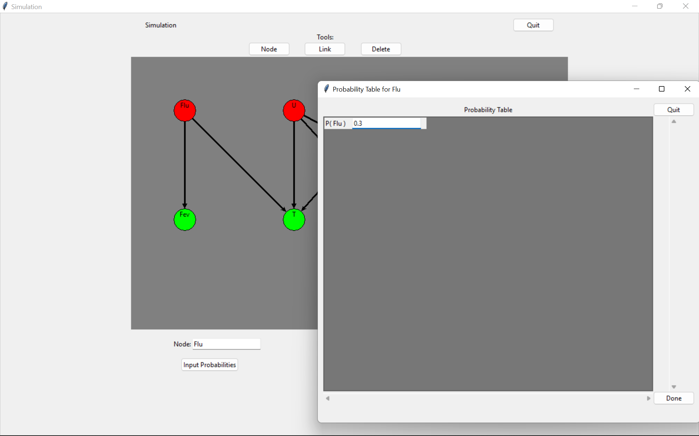
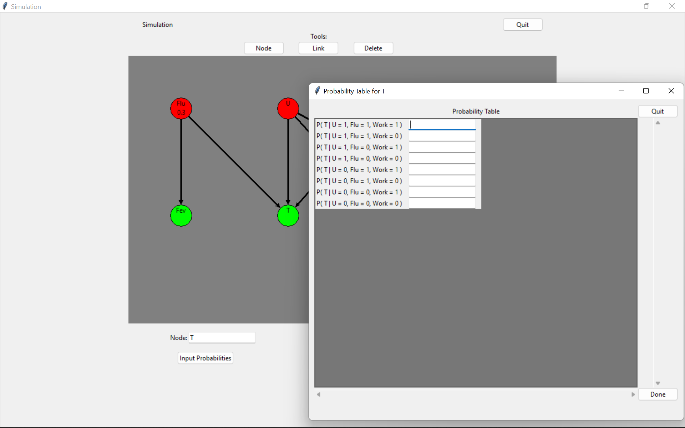
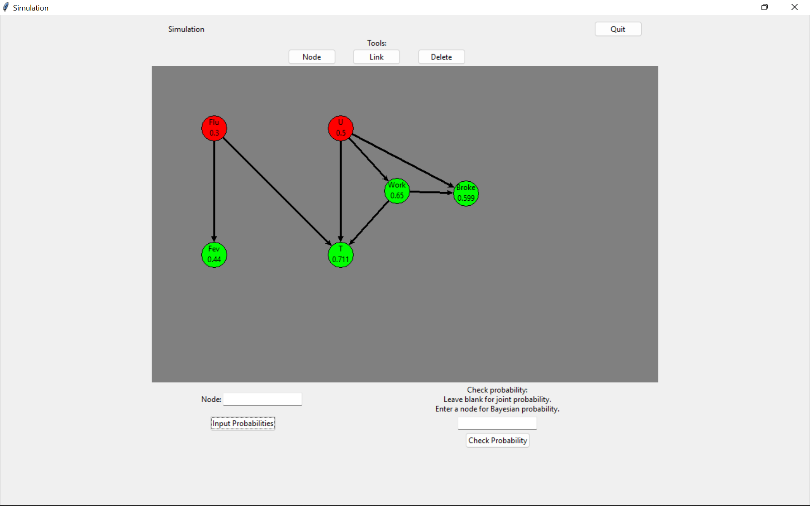
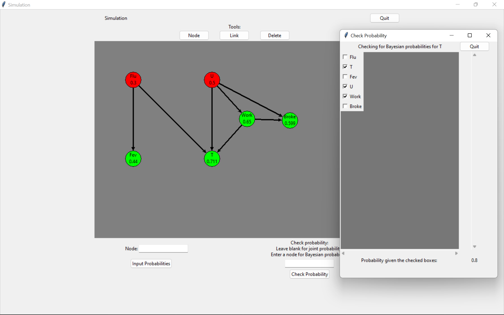

What are the odds that you've come across my site?
Well, if I had some research, I could probably come up with a Bayesian Network (Bayes Net for short) to help me figure that answer out. If you don't know what Bayes Nets are, they are a relatively simple form of AI (not ML) that uses known or assumed probabilities to map directed relationships between nodes.
For example, let's say that you are on a hiring team, you are looking for software engineers, you're looking for top talent, and that you have an attention span longer than just a few seconds. All of those are factors which would play some sort of role that led you to my website! We could diagram out all of these potential causes to actually answer the question above in a concrete, numerical outcome. Neat, huh?
Moving on to the project details, I made a GUI that helps you frame the above example visually and in a way that stores the information for multiple, easy lookups later! I will admit, this project isn't as polished as I wanted it to be and that I did want to add in more quality-of-life features. Unfortunately there is only so much time in the world. Regardless, I'm still proud of what I've created!
As the sole developer of this project, here's what I used to create this GUI:
Yup. That's it! Just some graphics and a lot of math. There's a better viewing of the GUI shown below.




